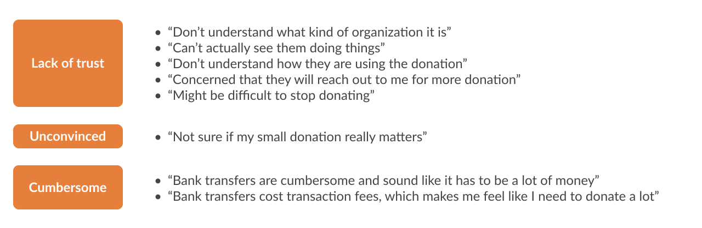

Project Summary
Background
Tokyo Mental Health Square (TMS) is a non-profit organization in Tokyo that provides mental health services to those in need, for a low cost / free of charge, and needed help fundraising.
Target
Potential donors interested in philanthropic activities (e.g. volunteering, donation) but do not know TMS
Issues
Lack of information to determine whether TMS is a "donation-worthy" NPO
Solution
I redesigned and coded a responsive donation page for TMS that creates an experience for potential donors to feel empathy and trust towards TMS.
Context
The earlier half of this project (research phase) was part of a pro bono project between TMS and my previous employer (ZS Associates) that I led, with 2-3 other team members. The latter half (design phase) was part of a school project that I later took up. Throughout both phases, we closely communicated with TMS.
Process
As stated above, this project was conducted in two separate phases. In the first phase, we conducted user interviews to understand how potential donors decide to donate to a cause. In the second phase, I designed and implemented the donation page. I also evaluated the design through a quantitative survey, to test the effectiveness of the design.
1. Understand and Define
Our team recruited and interviewed 13 subjects (20s-50s) to understand the drivers and barriers to donating to a cause. We found 3 key barriers to donation: (1) lack of trust towards the organization due to lack of transparency of the organization, (2) not feeling convinced that the donation would be useful and impactful, and (3) cumbersome payment process.

Based on these insights, we created a donor journey map to understand where and how the donation page can play a role in the entire donor journey. For this project, we focused on the "consideration" stage of the journey.
We concluded that for the donation page to encourage potential donors to donate, we need to craft a story about TMS that builds:
- Empathy & sense of urgency about the cause
- Trust towards the organization (through past outcomes & transparency)
- Sense of meaningfulness (i.e. “What I contribute matters”)
2. Design and Evaluate
We thought that having a one pager that navigates the user through our story was the simplest way to get our message across, and created a site map accordingly.
Although we want users to empathize with the cause, we also wanted to make sure that there was an air of positivity and forwardness, so that users can become deeply empathetic but also positive that TMS is solving the issue of mental health for a better future.
Hence, we intentionally chose light & warm colors to express “warmth” (yellow ~ orange for main colors), while also taking into account the homepage’s main color (orange). We kept the background white for a simple / minimal look. We also wanted to give the page a sleek and modern look to make sure users understand that TMS is a forward-looking organization. The resulting visual system is below:
Based on the visual system and sitemap, I created the website design and implemented it using HTML/CSS/Javascript. (It would have been best to conduct user testing before I implemented the website, but that was not possible due to the deadline of the school project.)
Reflection
The website itself is only one part of the whole donor journey. Effectively reaching potential donors through various marketing efforts, as well as nurturing the relationship after users become donors through continuous communication are just as important.
From this project, I worked directly with the organization, and learned to communicate about design with a non-design audience.
I am currently working with the organization to integrate this page into their organization website.